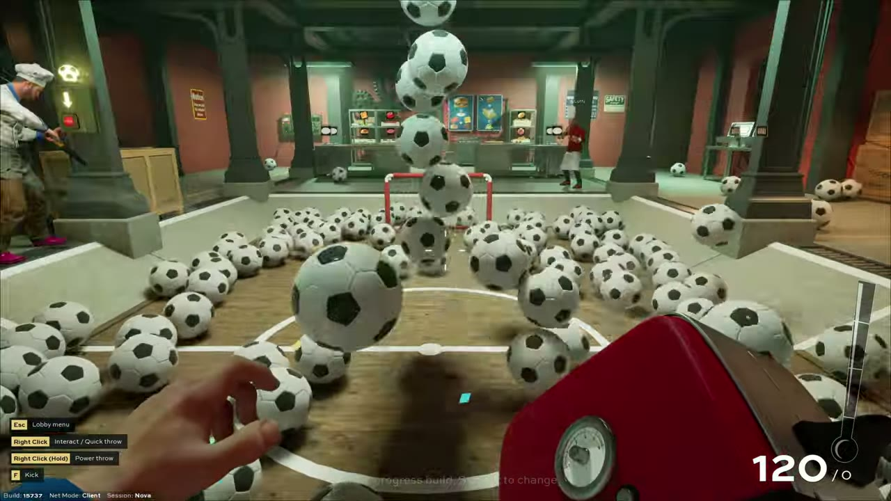

Mayhem À La Carte playtest review: four-player kitchen defense with toaster guns, then a rat mod

Mayhem À La Carte is a first-person cooking shooter from INGAME STUDIOS, published by 505 Games. You cook orders and defend the kitchen from armed attackers, solo or in online co-op for up to four players. It's coming to Steam in Early Access in 2027. INGAME STUDIOS gave us access to a prerelease playtest.
Four of us ran the diner. Before the first shift I gave a Chef Boyardee pep talk about defending his recipe, and we took red toasters off the weapon wall, because the toaster shoots toast. Shift one was burgers and fries, and it fell apart right away. Nobody could find the meat, a lobster clamped onto my foot, Nova got shut in the freezer, and the burgers caught fire. Zero stars, Failed Service.
Shift two got us one star, even though I got locked in the walk-in freezer and a teammate got shrunk to kid size and couldn't reach the counter. When we replayed onion rings and fries, two of us chopped and two fried, and that finally got three stars and Perfect Service. Onions still ended up all over the floor, and I spent a while arguing that kitchen rats are "the original AI vacuum robot." Between shifts we spawned hundreds of soccer balls in the lobby court on purpose, until I could taste the frame rate. On the cheeseburger shift a wave of masked gunmen shot me and I spent the rest of it as a ghost. We went back and got three stars anyway.

After the co-op shifts I loaded the Ratatouille mod I'd spent the day building. It wouldn't work for the others, so I went solo. Under a "Modded gameplay" banner, dozens of blue rats in chef hats flooded the kitchen, plates of fries and onion rings flew everywhere, a few rats floated straight up through the ceiling (going home to feed their children, obviously), and the game froze. That one's on my mod, not the game.


Mayhem À La Carte isn't out yet, but you can wishlist it on Steam. The video is below. Mayhem À La Carte on Steam
More mods breaking games: the CRACK modded speedrun and Alien: Isolation with Thomas the Tank Engine as the Alien.